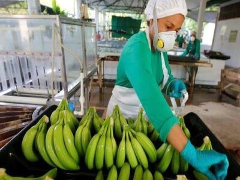

Discover Villahermosa
| 2020 | 2010 | |
|---|---|---|
| Female Inhabitants | 17,8122 | 18,3856 |
| Male inhabitants | 16,1938 | 16,9721 |
| Total population | 34,0060 | 35,3577 |
| Population coming from outside the State of Tabasco | 16.01% | 17.13% |
| Employed population over 12 years | 51.46% | 41.98% |
| Dwellings with cellular phones | 93.66% | 86.08% |
| Homes with Internet | 66.11% | 32.25% |
| Schooling level: | 11.66 | 10.94 |
The Plaza de armas

ThePlaza de Armasof the city of Villahermosa, Tabasco in Mexico, is located in the Historic Center of Villahermosa and was drawn in the year 1564 by the Spanish Diego de Quijada, when founding the city with the name of Villa Carmona. At various times, the Plaza de Armas of Villahermosa, has been named: "Plaza Mayor", "Plaza de la Constitución" (in 1813 when the Constitution of Cádiz was promulgated and 1857 when the Constitution of the Republic was promulgated) and "Plaza José María Pino Suárez", later restoring its name of "Plaza de Armas".
The Laguna de las ilusiones
TheLaguna de las Ilusionesis one of the symbols of the city of Villahermosa, it is located in the northern part of the city, with an area of 229.27 hectares. It has a depth between 2 m and 4 m deep. However, during the rainy season, the depth of the lagoon usually reaches 6 m. Due to its great importance as home to many aquatic and terrestrial species, the lagoon was decreed by the Government of the State of Tabasco as a Protected Natural Area, classified as an Ecological Reserve, on February 8, 1995.
The Museo elevado
TheMUSEVIa new elevated museum that is complemented by an open-air amphitheater at its base physically connects two currently isolated lakes, the Vaso Cencalli and the Lagoon of Illusions, the MUSEVI proposes a new form of exhibition and public space that encourages the connectivity and social encounter. Similarly, the accompanying amphitheater has become a new focal point for Parque Tomás Garrido. And with the parts of the building that protrude from the landscape, the museum, at the same time, celebrates and encourages the intimate and reflective contemplation of the nature that surrounds it.
The Cabeza Olmeca
Thecolossal Olmec headswere carved from large basalt stones extracted from the Sierra of the Tuxtlas in Veracruz. These were transported great distances, although the method used for transport is unclear. The finished monuments realistically represented the portraits of the different Olmec rulers. Likewise, all of the colossal heads show mature men with fleshy cheeks, flat noses, flat backs, and eyes that tend to squint. The general physical characteristics of the heads are from a race or population that is still common in the states of Tabasco and Veracruz today. It is believed that because of the helmets they wear, the heads represent warriors and not gods.
Platano Tabasco
ThePlatano Tabascoit is a large plant, considered a herb because its aerial parts die and fall to the ground when the growing season ends; It is perennial because a shoot called the daughter emerges from its base, which replaces the mother plant. What appears to be the trunk is actually a pseudostem. Its smooth and tender leaves are among the largest in the plant kingdom. Produces 300 to 400 fruits per spike, weighing more than 50 kg.
Caña de Azúcar
Thesugarcaneit is a tropical grass with a solid stem 2 to 5 m high, 5 or 6 cm in diameter, cylindrical, elongated, and without ramifications, divided into nodes and internodes. The stem is the most important part because the sugar is stored there. The leaves reach 2 to 4 meters in length. The panicle is located in its upper part, which is about 30 cm long. The sugarcane stem is considered an agricultural fruit since it is where sugar is distributed and stored. It is approximately 75% water and is made up of nodes and internodes, which differ or change with different varieties in length, diameter, shape, and color.